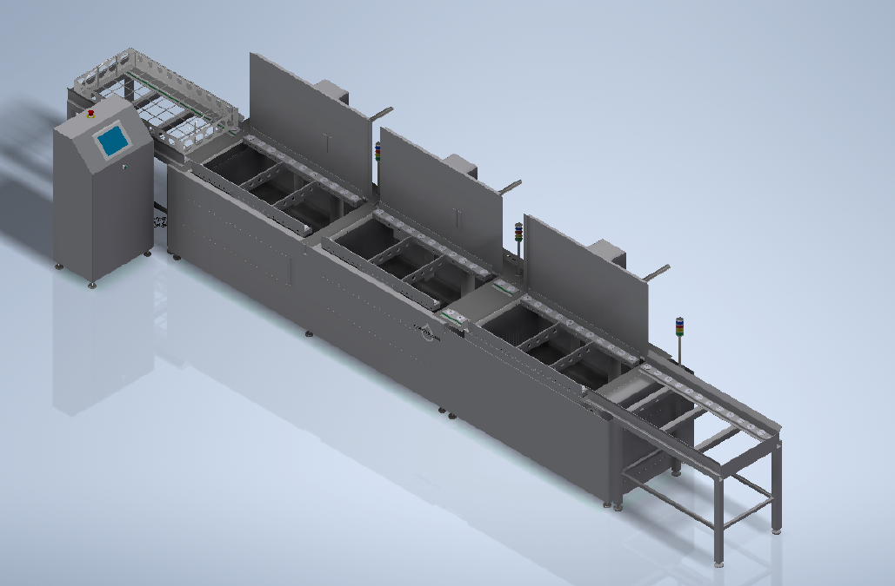
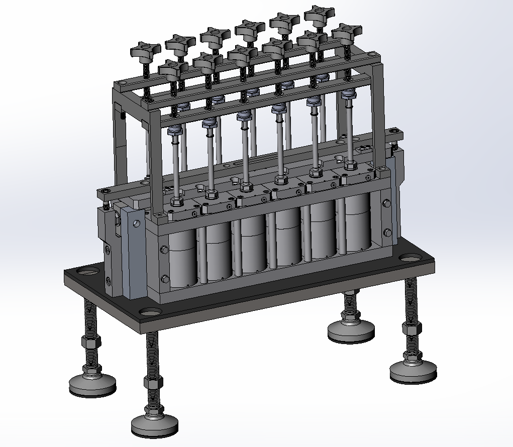
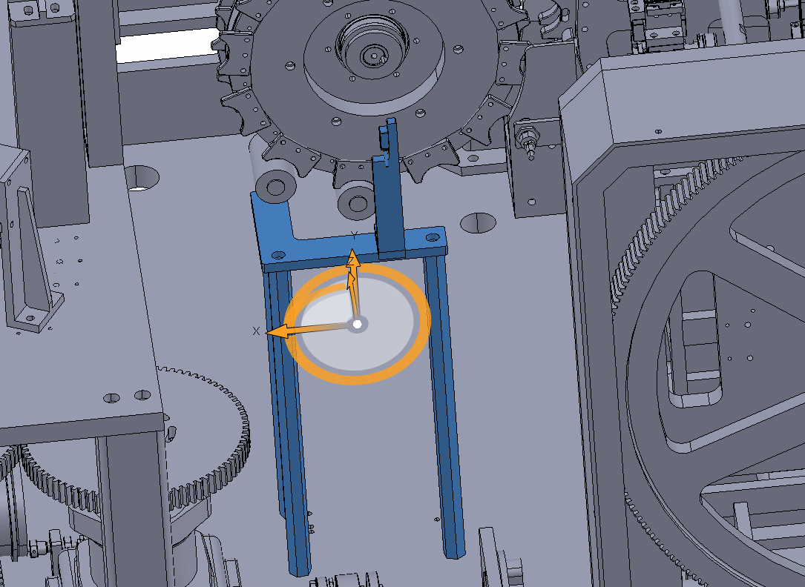
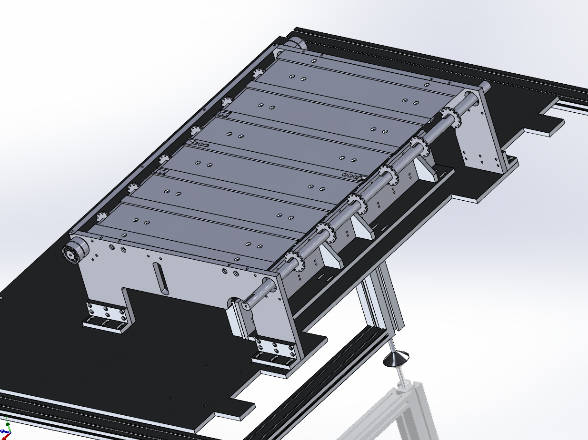
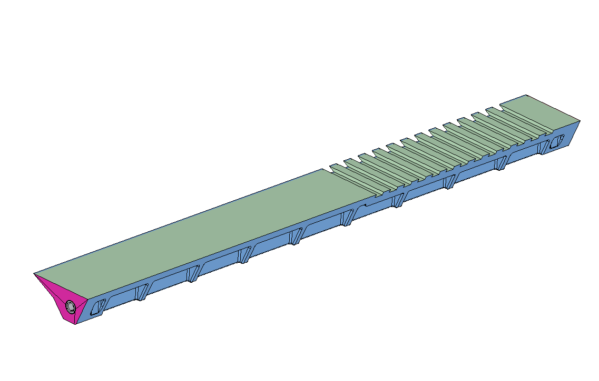

Design Engineer Portfolio
I turn ambiguous shop-floor problems into reliable, manufacturable hardware.
I'm a mechanical design engineer with hands-on experience designing production equipment, custom tooling, and facility systems for high-volume manufacturing. My work spans fixture and tooling design, DFM for machining and injection molding, reverse engineering, and cross-functional facility build-outs — with a track record of measurable gains in yield, capacity, and cost.

Core skills & tools
What I bring to a design engineering team, demonstrated across the case studies below.
Case Studies
A selection of production equipment, custom tooling, and facility design projects — each framed around the problem, my role, the design approach, and the measured (or expected) outcome.

Ultrasonic Washroom Project
Designed and stood up a dedicated facility workspace for safely rebuilding hazardous-chemical equipment — partnering with an equipment vendor and facilities team from requirements through install.
View case study →
Electrolyte Filler Maintenance Program
Identified a tooling gap and designed four custom fixtures — from a pressure/leak-test stand to a calibration fixture — that unlocked a repeatable fleet maintenance program.
View case study →
Flushing Grommet Redesign
Root-caused a recurring seal failure and redesigned it into a single-piece, chemically-resistant part — eliminating a quality risk and cutting spare-parts cost.
View case study →
Clutch Sensor Mounting Redesign
Diagnosed a vibration- and alignment-sensitive sensor mount and redesigned it as a decoupled, floor-standing fixture to eliminate false trips and mechanical risk.
View case study →
Conveyor Infeed Upgrade
Retrofit a multi-lane conveyor's drivetrain to enable independent lane servicing and standardize on a widely available chain system.
View case study →
Carrier Redesign (CIP Leak Elimination)
Root-caused a structural deflection issue causing chemical leaks, redesigned the carrier, and deployed the fix fleet-wide.
View case study →
Reverse-Engineered Injection-Molded Part
Reverse-engineered an unsupported vendor part from scratch and partnered with a molder to tool an injection-molded replacement, cutting per-part cost by roughly 80%.
View case study →